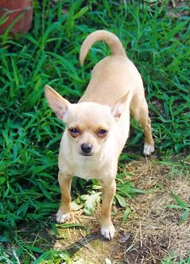

Chihuahua puppies for sale have found their way into the hearts of dog lovers across the world. This has surpassed the days of them being poster-dogs for Taco Bell and Tinkerbell. They have created a name for themselves with their larger than life temperaments. We have compiled five fun reasons why we think Chihuahua puppies are some of the best to own!
Come on, you know it’s absolutely adorable when you see little puppies dressed up and we like to think that Chihuahuas popularized the trend of dressing up dogs. Because of their tiny sizes, it’s almost impossible not to find clothing for them. Whether your pup is a male or female, they are cute and stylish in every outfit!
At their maximum weights of 7 pounds, they are the absolute perfect size to accompany you on any trip, whether it’s in a car or on a plane. It goes without saying that they are also perfect for apartments. If you’re a first-time pet owner, getting one of our Chihuahua puppies for sale was a great choice. They are rather low maintenance dogs.
Did you know that Chihuahuas come in many colors and hair types? They range from long hair to short hair, there are teacups, pear-head shaped ones, and even apple-heads. It sounds funny, we know, but they truly exist and each is a cute as the other..